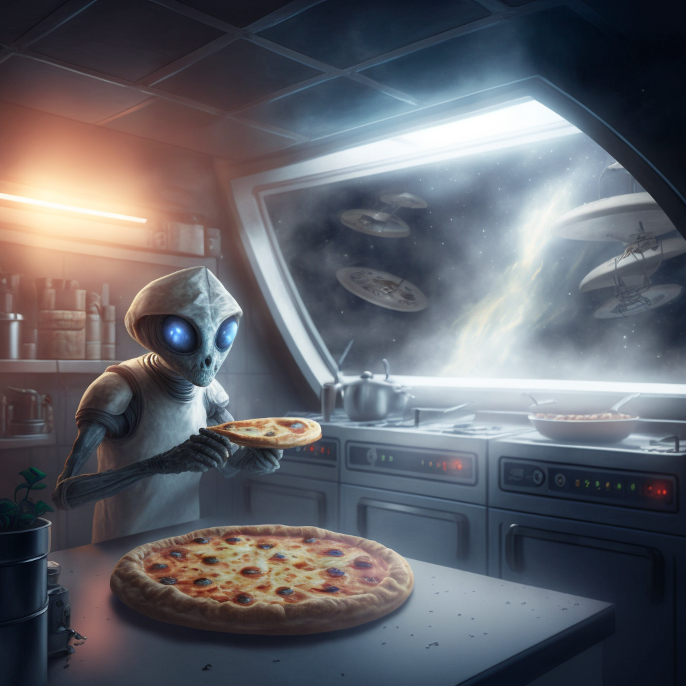

Intergalactic Pizza
This is a recipe for intergalactic pizza found in an alien cookbook
Ingredients:
1 cup of purple flour (made from crushed cosmic crystals)
1/2 cup of stardust
1/4 cup of black hole water
1/4 cup of antimatter sauce
1 cup of galaxy cheese (made from the milk of space cows)
Toppings of your choice (suggestions: moon rocks, comet chunks, or interstellar pepperoni)
Instructions:
- In a large mixing bowl, combine the purple flour and stardust. Slowly add in the black hole water and mix until a dough forms.
- Knead the dough for 10 minutes, then place it in a warm area to let it rise for 1 hour.
- Preheat your antimatter oven to 350 degrees.
- Roll out the dough on a pan and spread the antimatter sauce on top.
- Sprinkle the galaxy cheese and toppings of your choice on top of the pizza.
- Carefully place the pizza in the antimatter oven and bake for 15-20 minutes or until the crust is golden and the cheese is melted.
- Take the pizza out of the oven and let it cool for a few minutes.
- Enjoy your cosmic creation!
